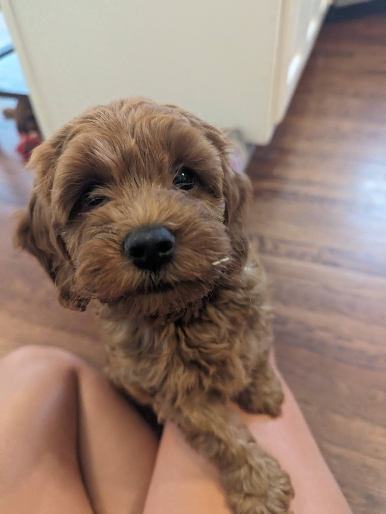

Home Raised
Our puppies grow up around everyday family life, gentle handling, and plenty of attention.
Cavapoos in Georgia
Welcome to Georgia Cavapoos. We’re so glad you’re here. Choosing a puppy is an important decision, and we’re honored you’re considering our program.



Welcome
Our goal is simple: raise healthy, affectionate Cavapoos with wonderful temperaments for families who want a lifelong companion.
We care about the whole experience — the puppy’s early care, the families we work with, and the support that continues after go-home day.
Why families choose Georgia Cavapoos
Our puppies grow up around everyday family life, gentle handling, and plenty of attention.
We focus on thoughtful pairings, veterinary care, and healthy beginnings.
We want confident, affectionate puppies that fit beautifully into family homes.
Puppies are introduced to new sounds, textures, people, and experiences as they grow.
We want families to feel informed and supported before and after their puppy comes home.
Our approach
We keep things personal so every puppy receives individual attention. This also helps us get to know our families and guide them through the process with care.
Learn more about usMeet our dogs
Our parent dogs are chosen for health, temperament, structure, and the loving personalities families hope for in a Cavapoo.
Meet Our DogsQuestions
Start by completing the puppy application. We’ll review it and follow up with the next steps.
Not at this time. We are accepting applications for upcoming litters.
Approved families on our waitlist will receive updates as future litters are planned.
If you’re interested in a future Georgia Cavapoo, we’d love to hear from you.
Join Our Waitlist